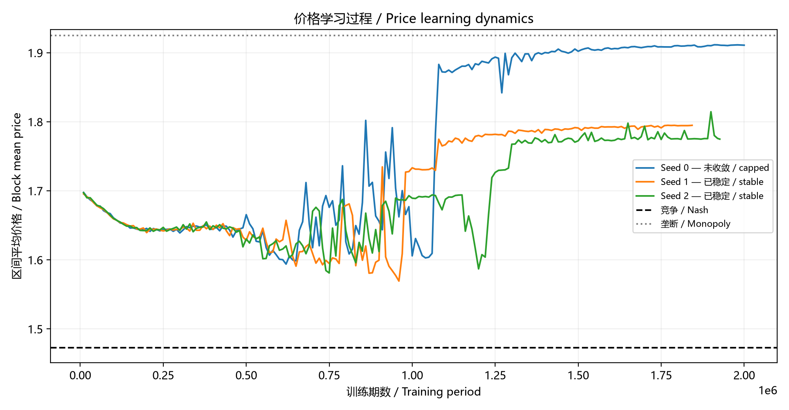
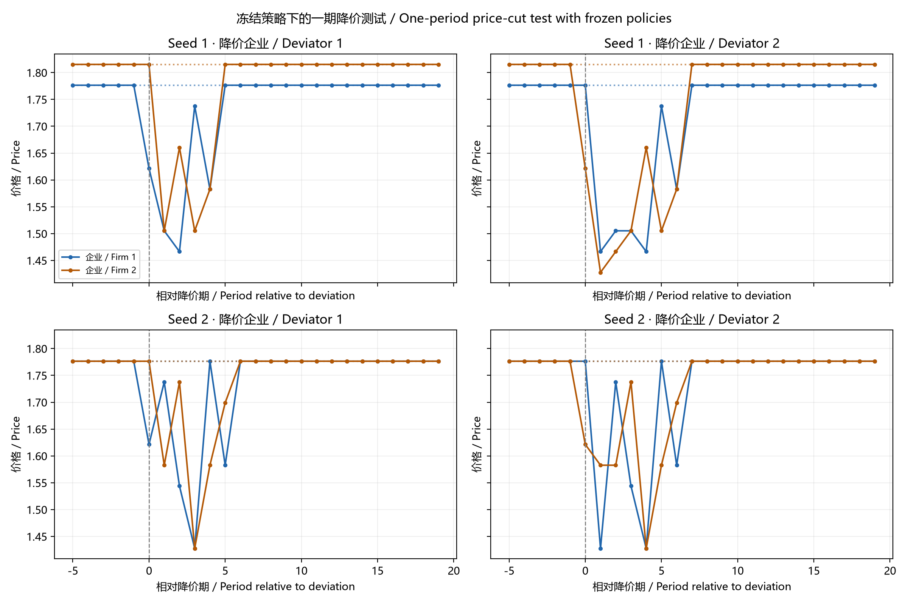
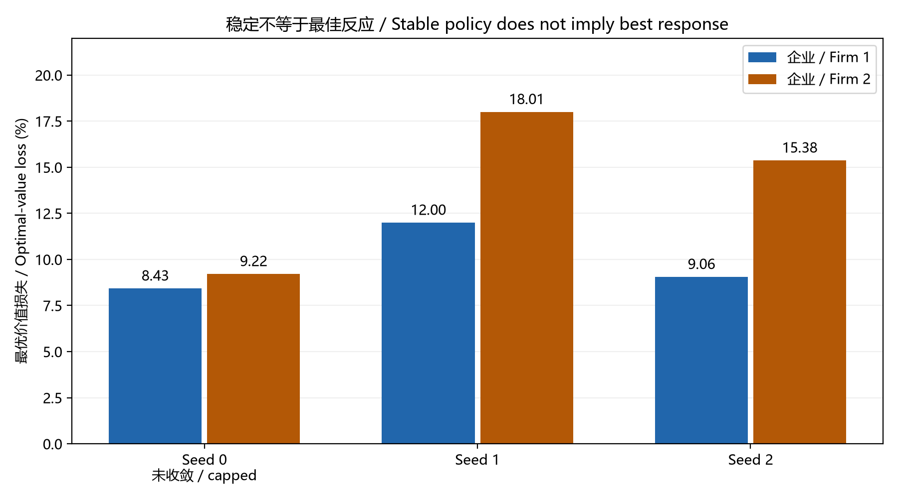
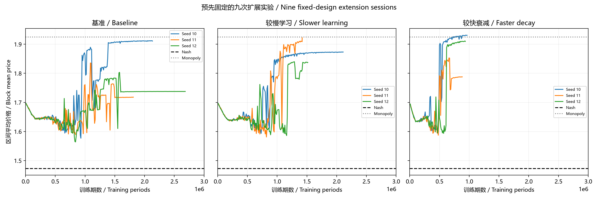
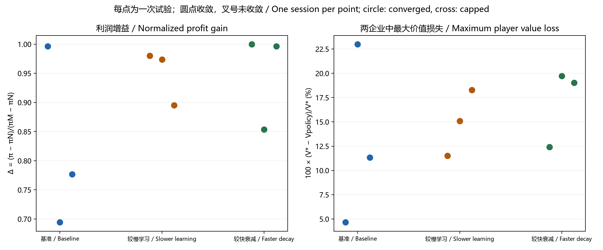

课程报告：部分复现、策略核验与敏感性分析 / Course report: partial reproduction, strategy checks and sensitivity analysis
RICHINA ORTANCIA DOMINIQUE（杜米妮）
本研究用独立Python实现，对Calvano等（2020）的对称双寡头Q-learning定价模型进行缩减规模复现。首先运行三个初始试验，随后保存扩展方案并完成三个设置、各三个新种子的九次敏感性试验。研究同时检查价格、策略稳定性、偏离响应和最佳反应，避免把高价或收敛等同于合谋均衡。 / This study independently implements a reduced-scale reproduction of the symmetric duopoly Q-learning pricing model of Calvano et al. (2020). Three initial sessions are followed by a fixed extension with three settings and three new seeds per setting. Prices, policy stability, deviation responses and best responses are checked separately.
新九次试验均满足策略稳定标准。基准、较慢学习和较快探索衰减的平均冻结价格分别为1.7894、1.8791、1.8776，高于连续价格Nash参考1.4729。但九次试验均未通过联合最佳反应检验。初始两次收敛试验也未通过该检验。因此，这些运行显示高价与降价响应，而非已验证的合谋均衡。 / All nine extension sessions meet the policy-stability criterion. Mean frozen prices are 1.7894, 1.8791 and 1.8776 for baseline, slower learning and faster exploration decay, above the continuous-price Nash reference of 1.4729. None passes the joint best-response test; neither do the two converged initial sessions. These runs show high prices and price-cut responses, rather than a verified collusive equilibrium.
本文是课堂部分复现，不复现原文完整参数网格或合谋发生率。每组仅三次新试验，比较为描述性，不作总体因果或显著性推断。 / This is a partial classroom reproduction, not a replication of the full parameter grid or collusion frequency. Three new sessions per setting support descriptive comparisons only.
作者 / Author: RICHINA ORTANCIA DOMINIQUE（杜米妮）
课程 / Course: 人工智能与经济管理研究 / Artificial Intelligence and Economic Management Research
两个独立Q-learning定价算法能否形成高于竞争价格的稳定行为？ / Can two independent Q-learning pricing algorithms develop stable behavior above competitive prices?
基础文献 / Source: Calvano et al. (2020), AER, DOI 10.1257/aer.20190623.
qᵢ = exp((aᵢ−pᵢ)/μ) / [exp(a₀/μ) + Σⱼ exp((aⱼ−pⱼ)/μ)]
πᵢ = (pᵢ−cᵢ)qᵢ
Qᵢ(s,a) ← (1−α)Qᵢ(s,a) + α[πᵢ + δ max Qᵢ(s′,·)]
n=2, c=1, a=2, a₀=0, μ=0.25, δ=0.95, α=0.15, β=4×10⁻⁶; εₜ=exp(−βt). 15个离散价格，上一期联合价格为状态。 / Fifteen discrete prices; the previous joint price is the state.
连续价格参考 / Continuous-price references: Nash = 1.472927; monopoly = 1.924981.
三个种子0、1、2；每个最多两百万期。收敛要求两个企业在所有状态的贪婪策略连续100,000期不变。原论文每组1000次实验并允许最多十亿期；本项目尚未运行完整参数网格。 / Seeds 0, 1, 2; up to two million periods each. Convergence requires unchanged greedy strategies at all states for 100,000 periods. The paper uses 1,000 sessions per experiment and a one-billion-period cap; the full grid is not run here.
| seed | steps | converged | stable_periods_observed | frozen_mean_price | profit_gain | cycle_length | seconds |
|---|---|---|---|---|---|---|---|
| 0 | 2000000 | False | 41629 | 1.912065 | 0.975078 | 2 | 47.167535 |
| 1 | 1843236 | True | 100000 | 1.795823 | 0.895059 | 1 | 43.792644 |
| 2 | 1926687 | True | 100000 | 1.776449 | 0.867587 | 1 | 51.087735 |
profit_gain = (每企业平均利润−Nash利润)/(垄断利润−Nash利润)。 / Profit gain normalizes mean per-firm profit between Nash and monopoly.
未收敛试验的冻结策略结果仅为诊断，不能作为收敛结果。 / Frozen-policy outcomes from nonconverged runs are diagnostic only. Frozen means are calculated over the eventual deterministic cycle reached from the final training state, with exploration and learning disabled.
训练期均值与冻结策略均值不同。高于竞争价格本身不足以证明合谋，仍需最佳反应和惩罚机制验证；此阶段不宣称复现原文的合谋频率。 / Training averages differ from frozen-policy averages. Supracompetitive prices alone do not establish collusion; best-response and punishment diagnostics remain necessary. This stage does not reproduce the paper's collusion frequency.
python -m pip install -r requirements.txt python verify.py python run_experiment.py --steps 2000000 --seeds 0 1 2 --output results python summarize.py
已有results时，请改用新输出目录，避免覆盖。 / Use a new output directory if results already exist.
已通过需求对称、基准价格、Nash附近单方偏离及固定种子重复性检查。独立Python实现，尚未与作者Fortran包逐项核对。 / Symmetry, reference-price, local Nash best-response and fixed-seed repeatability checks passed. This is an independent Python implementation, not yet audited against the authors' Fortran package.
下一步：提高运行上限、增加种子、验证稳定策略的最佳反应、分析偏离路径，并开展预先固定的稳健性实验。 / Next: extend the cap, add seeds, check best responses to stable policies, inspect deviation paths and run prespecified robustness exercises.
AI阅读用户提供的文章、提取参数、编写Python代码并运行检查和三次试验；未使用付费API。Colab笔记本提供可重新生成的价格演化图。 / AI extracted parameters from the supplied article, wrote the code, ran checks and executed three sessions. No paid API was used. The Colab notebook includes code to generate price-evolution plots.
对手策略固定为已保存的记忆一期策略，在同一15价格网格上用价值迭代求最佳反应。当前策略的折现价值通过策略评估计算。所有测试关闭学习与探索。 / Holding the opponent's saved memory-one policy fixed, value iteration computes a best response on the same 15-price grid. Policy evaluation computes the current policy's discounted value. Learning and exploration are disabled.
价值损失 = 100 × (V*−V策略)/V*，在最终循环状态取最大值。数值Bellman残差低于10⁻¹¹，最佳反应价值误差界低于2×10⁻¹⁰。 / Value loss is 100 × (V*−Vpolicy)/V*, maximized over states on the final cycle. Bellman residuals are below 10⁻¹¹; optimal-value error bounds are below 2×10⁻¹⁰.
| Seed | 训练收敛 / Stable | 企业1损失 / Firm 1 loss | 企业2损失 / Firm 2 loss | 最佳反应 / Best response |
|---|---|---|---|---|
| 0 | 否 / No | 8.433% | 9.219% | 未通过 / Not passed |
| 1 | 是 / Yes | 11.999% | 18.006% | 未通过 / Not passed |
| 2 | 是 / Yes | 9.061% | 15.376% | 未通过 / Not passed |
两个收敛试验均未通过最佳反应检验。 / Both converged runs fail the best-response test. This distinguishes observed strategy stability from an equilibrium of the restricted repeated game. Three runs do not estimate the paper's equilibrium frequency.

在t=0强制一家企业选择严格低于原价、当期利润最高的网格价格，仅持续一期。另一企业同时行动，因此最早在下一期响应。此后两家恢复冻结策略。分别对两家实施，绘图虚线表示未干预基线。 / At t=0 force one firm to choose the stage-profit-maximizing strictly lower grid price for one period. Simultaneous play means its rival first reacts in the next period. Both then follow frozen policies. Each firm is tested separately; dotted lines show the untreated baseline.
种子1中，原循环在降价后6期或8期恢复；种子2为7期或8期。对手下一期均降价，但此类响应并未排除其他有利偏离。该测试为课堂改编，不声称精确复现原文Figure 6。 / Seed 1 returns to its original cycle after 6 or 8 periods; seed 2 after 7 or 8. The rival cuts its next-period price in all four tests, but these responses do not rule out other profitable deviations. This is a classroom adaptation, not an exact Figure 6 replication.


独立验证：对固定对手的最佳反应退化为静态最佳反应；通过线性方程组独立验证策略价值与最优价值。 / Independent checks: against a constant opponent, the repeated best response equals the static best response; linear-system solutions independently confirm policy and optimal values.
结论：观察到高价、稳定和降价响应，但当前样本不能认定达到合谋均衡。下一阶段应固定扩展方案，增加独立种子和稳健性设置，而不是为获得预期结果反复挑选参数。 / Conclusion: high prices, stability and price-cut responses are observed, but these runs do not establish a collusive equilibrium. Prespecify additional seeds and robustness settings rather than selecting parameters to obtain a desired result.
策略核验CSV / Strategy summary · 完整诊断 / Full diagnostics · 分析代码 / Analysis code · 独立核验 / Independent checks · 绘图代码 / Plotting code
在已观察前两阶段后，先保存方案与代码哈希，再运行九次新试验。这是后续探索的固定扩展方案，不是全研究事前注册。 / After inspecting stages 1–2, the design and code hashes were saved before nine new runs. This is a fixed follow-up design, not preregistration of the entire study.
所有组使用新种子10、11、12，每次最多3,000,000期。基准α=.15、β=4×10⁻⁶；较慢学习仅把α改为.10；较快探索衰减仅把β改为8×10⁻⁶。其余经济与算法设置不变。同一种子在各组提供匹配的随机数流。 / New seeds 10, 11, 12 and a common 3,000,000-period cap are used throughout. Baseline: α=.15, β=4×10⁻⁶. Slower learning changes only α to .10; faster exploration decay changes only β to 8×10⁻⁶. All other settings are unchanged. Seeds provide matched random streams across groups.
表中价格和利润均值仅使用收敛试验。全部试验，包括达到上限未收敛者，均保存在原始结果和下表。 / Headline price and profit averages use converged sessions only. All runs, including capped nonconverged sessions, are retained in the raw results and session table.
| Setting | Converged | Mean price, converged | Mean Δ, converged | Joint best response, converged |
|---|---|---|---|---|
| baseline | 3/3 | 1.7894 | 0.8225 | 0/3 |
| slower_learning | 3/3 | 1.8791 | 0.9497 | 0/3 |
| faster_exploration_decay | 3/3 | 1.8776 | 0.9499 | 0/3 |


每组仅三次试验，不进行显著性检验，也不把观察到的差异当作总体因果效应或可靠的合谋发生率。高价、策略稳定和最佳反应为不同指标，不能互相替代。 / With only three sessions per setting, no significance tests are performed. Differences do not establish population causal effects or a reliable collusion frequency. High prices, policy stability, and best responses are distinct outcomes.
这是学习参数敏感性分析，尚未复现原文关于企业数量、不对称成本、需求不确定性等经济环境稳健性检验。早期2,000,000期试验未与新上限组混合计算均值。 / This tests learning-parameter sensitivity, not the paper's economic robustness exercises on firm count, asymmetric costs, or demand uncertainty. Earlier sessions with a 2,000,000-period cap are not pooled with this common-cap comparison.
| scenario | seed | steps | converged | frozen_price | profit_gain | joint_best_response | max_player_value_loss_percent |
|---|---|---|---|---|---|---|---|
| baseline | 10 | 2132639 | True | 1.912065 | 0.996396 | False | 4.655234 |
| baseline | 11 | 1811332 | True | 1.718328 | 0.694302 | False | 22.986369 |
| baseline | 12 | 2683943 | True | 1.737701 | 0.776660 | False | 11.320965 |
| slower_learning | 10 | 2109482 | True | 1.873318 | 0.980271 | False | 11.511935 |
| slower_learning | 11 | 1420186 | True | 1.921752 | 0.973724 | False | 15.089455 |
| slower_learning | 12 | 1515072 | True | 1.842320 | 0.895098 | False | 18.287470 |
| faster_exploration_decay | 10 | 964181 | True | 1.931439 | 0.999734 | False | 12.411745 |
| faster_exploration_decay | 11 | 882751 | True | 1.789365 | 0.853445 | False | 19.728005 |
| faster_exploration_decay | 12 | 934251 | True | 1.912065 | 0.996396 | False | 19.036835 |
审计通过：全部配置、种子、代码和方案哈希一致；从保存的Q表复核贪婪策略、冻结循环价格与利润增益；最佳反应Bellman残差均低于10⁻⁹。 / Audit passed: configurations, seeds, source and protocol hashes match; greedy policies, cycle prices and gains were recomputed from saved Q tables; best-response Bellman residuals are below 10⁻⁹.
方案 / Protocol · 九次结果 / Session CSV · 分组汇总 / Group summary · 审计 / Audit · 运行代码 / Runner · 汇总代码 / Summary code
报告、五张图、全部十二次试验的JSON/NPZ模型、CSV汇总、固定扩展方案及校验代码一并提供。原文PDF不重新分发。 / Included: this report, five figures, JSON/NPZ outputs for all twelve sessions, CSV summaries, the fixed extension protocol and verification code. The article PDF is not redistributed.
python -m pip install -r requirements.txt python verify.py python verify_diagnostics.py python summarize_robustness.py
这些命令不重新运行长训练；verify.py含两次1000期的微型重复性检查。 / These commands do not repeat the long training runs; verify.py includes two 1,000-period repeatability checks.
python reproduce_stage3.py
该命令创建新目录、用三个CPU进程运行全部九次试验并生成报告，不覆盖已有证据。可能耗时数分钟。 / This creates a new directory, runs all nine sessions with three CPU processes, and generates a report without replacing stored evidence. It may take several minutes.
完整说明 / Full README · 阶段1–2笔记本 / Stages 1–2 notebook · 依赖 / Dependencies · 阶段3方案 / Stage 3 protocol · 核验 / Audit
每次运行JSON记录Python/NumPy版本；各平台和依赖版本可能影响数值重现。固定随机数并不保证跨所有版本逐位一致。 / Run JSON files record Python/NumPy versions. Platform and dependency differences may affect numerical reproduction; fixed seeds do not guarantee bitwise equality across all versions.
用户提供课程笔记与本地论文，并确认开始复现实验。实际简短指令包括“OK COMMENCONS ALORS”和后续“prochaine étape”；AI结合论文、先前讨论的实验目标和中英文报告要求，逐步构建代码与分析。这些简短指令依赖完整上下文，不是独立可复用的完整实验提示词。 / The user supplied course notes and a local article and confirmed the experiment. Actual short instructions included “OK COMMENCONS ALORS” and subsequent “prochaine étape” requests. AI used the article and prior context to build the code and analyses step by step; the short requests alone are not complete reusable experiment prompts.
AI完成代码生成、执行、图表与报告整理；提交者应阅读公式、运行记录和结论，并能解释为何“稳定”不等于“最优”或“合谋均衡”。 / AI generated and executed code and prepared figures and reporting. The submitter should review the formulas, records and conclusions and explain why stability does not establish optimality or collusive equilibrium.
以下为根据实际工作整理的说明，并非原始对话的逐字记录。 / The following specification is reconstructed from the work, not a verbatim original prompt.
基于Calvano等（2020），实现两企业、15价格、一期记忆的Q-learning模型。保持论文基准经济参数，记录随机种子与收敛状态；分开报告高价、策略稳定、降价响应及最佳反应。保存所有配置与结果，明确有限运行、独立实现和小样本限制，输出中英双语HTML报告。
Implement the Calvano et al. (2020) duopoly Q-learning baseline with 15 prices and one-period memory. Record seeds and convergence; distinguish high prices, policy stability, price-cut responses and best responses. Retain all settings and results, disclose independent-implementation and small-sample limits, and produce a Chinese–English HTML report.
本项目完成了可运行、可核查的缩减复现实验与学习参数敏感性分析，但未复现原文合谋均衡的发生率。没有核对作者原始Fortran实现，亦未运行完整100×100学习参数网格、每组1000次试验，或企业数量、成本不对称和随机需求的经济稳健性实验。结果与原文不同应作为待解释的复现发现保留，而非隐藏或通过挑选参数消除。 / This project provides runnable, auditable reduced-scale experiments and learning-parameter sensitivity, but does not reproduce the paper's collusive-equilibrium frequency. The authors' original Fortran implementation has not been audited. The full 100×100 parameter grid, 1,000 sessions per experiment and economic robustness exercises remain outside scope. Differences from the paper are retained as findings to investigate, rather than removed through selective parameter choices.
Calvano, Calzolari, Denicolò and Pastorello (2020), American Economic Review 110(10), 3267–3297.